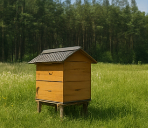
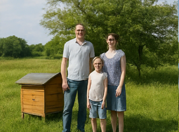
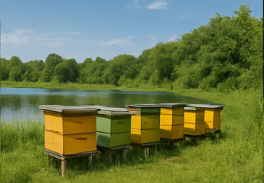
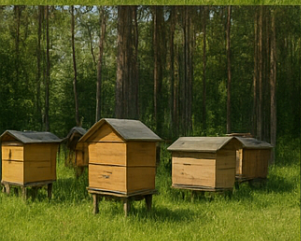
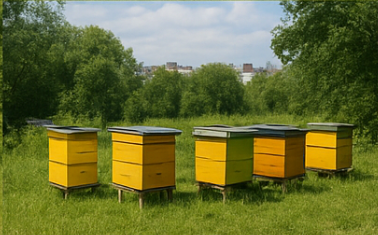
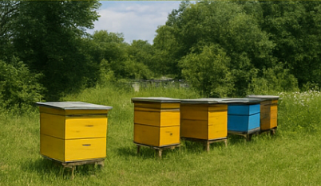
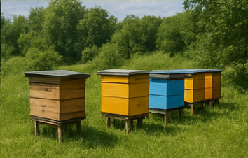

1. Pasieka Podlaska Natura, Białowieża
Założyciel: Andrzej Sawczuk
1. Pasieka Podlaska Natura, Białowieża
Założyciel: Andrzej SawczukCharakterystyka: Ekologiczna pasieka położona w sercu Puszczy Białowieskiej. Specjalizuje się w miodach lipowych i gryczanych.

2. Miodowa Dolina, Kazimierz Dolny
Założyciel: Barbara i Stanisław Michalscy
Charakterystyka: Rodzinna pasieka z tradycjami od 1964 roku. Produkuje miody rzepakowe, faceliowe i lawendowe.
Założyciel: Barbara i Stanisław Michalscy
Charakterystyka: Rodzinna pasieka z tradycjami od 1964 roku. Produkuje miody rzepakowe, faceliowe i lawendowe.

3. Złote Ule Mazur, Giżycko
Założyciel: Tomasz Wiśniewski
Charakterystyka: Pasieka turystyczna oferująca warsztaty i degustacje. Znana z miodów z terenów nadjeziornych.
Założyciel: Tomasz Wiśniewski
Charakterystyka: Pasieka turystyczna oferująca warsztaty i degustacje. Znana z miodów z terenów nadjeziornych.

4. Pasieka Nad Wisłą, Toruń
Założyciel: Joanna Cieślak
Charakterystyka: Miejska pasieka na dachach budynków. Produkuje miód wielokwiatowy z roślin miejskich i prowadzi edukację ekologiczną.
Założyciel: Joanna Cieślak
Charakterystyka: Miejska pasieka na dachach budynków. Produkuje miód wielokwiatowy z roślin miejskich i prowadzi edukację ekologiczną.

5. Apis Regina, Wrocław
Założyciel: dr Paweł Kalinowski
Charakterystyka: Nowoczesne gospodarstwo badawcze zajmujące się hodowlą matek pszczelich i badaniami nad zdrowiem pszczół.
Założyciel: dr Paweł Kalinowski
Charakterystyka: Nowoczesne gospodarstwo badawcze zajmujące się hodowlą matek pszczelich i badaniami nad zdrowiem pszczół.
 6. Leśne Skarby, Augustów
6. Leśne Skarby, AugustówZałożyciel: Ewa Kulesza
Charakterystyka: Pasieka położona wśród lasów sosnowych – specjalizuje się w miodzie spadziowym i sosnowym.

7. Miód i Tradycja, Sandomierz
Założyciel: Piotr Biernacki
Charakterystyka: Pasieka rodzinna, łącząca pszczelarstwo z lokalną enoturystyką i warsztatami dla gości.
Założyciel: Piotr Biernacki
Charakterystyka: Pasieka rodzinna, łącząca pszczelarstwo z lokalną enoturystyką i warsztatami dla gości.

8. Królewski Miód, Kraków
Założyciel: Magdalena Rutkowska
Charakterystyka: Pasieka miejska działająca przy muzeum. Prowadzi projekty edukacyjne dla dzieci i turystów.
Założyciel: Magdalena Rutkowska
Charakterystyka: Pasieka miejska działająca przy muzeum. Prowadzi projekty edukacyjne dla dzieci i turystów.

9. Pasieka Pod Tatrami, Zakopane
Założyciel: Janusz Krzeptowski
Charakterystyka: Produkuje górski miód z ziół Podhala. Współpracuje z lokalnymi bacami i agroturystykami.
Założyciel: Janusz Krzeptowski
Charakterystyka: Produkuje górski miód z ziół Podhala. Współpracuje z lokalnymi bacami i agroturystykami.
 10. Słodka Kraina, Lublin
10. Słodka Kraina, LublinZałożyciel: Katarzyna Zielińska
Charakterystyka: Pasieka edukacyjna odwiedzana przez szkoły. Organizuje dni otwarte i warsztaty pszczelarskie.